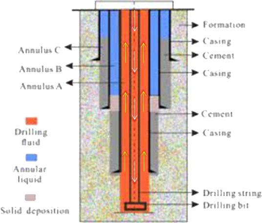
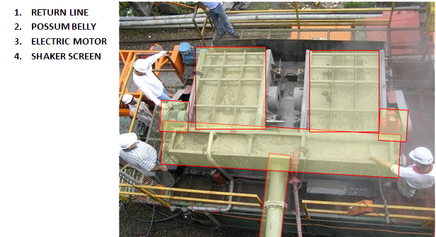

The Rig Equipment responsible the movement of drilling fluid within the well as well as solids removal incurred by the drilling fluid.
Normally the circulation would start from the mud pits, down the drill stem, up the annulus and back to the mud pits.
Circulating component consist of the following :
Mud Pump
A large, high-pressure reciprocating pump used to circulate the mud on a drilling rig.
A typical mud pump is a two cylinder, double acting or a three cylinder, single acting piston pump whose pistons travel in replaceable liners and are driven by a crankshaft actuated by an engine or motor.
Pump Manifold
An arrangement of piping and valves that receives drilling fluid from one or more mud pumps and transmit the drilling fluid to the succeeding circulating component.

Standpipe
The vertical pipe rising along the side of the Derrick or Mast, which joins mud pump manifold to the rotary hose.
Swivel
The rotary tool that is hung from the hook of the traveling block to suspend the drill string and permit it to rotate freely.
It also provides connection for the rotary hose and provide passageway for the flow of drilling fluid into the drill-stem.
Drill String
A drill string on a drilling rig is a column, or string, of drill pipe that transmits drilling fluid (via the mud pumps) and torque (via the Kelly drive or top drive) to the drill bit. The term is loosely applied to the assembled collection of the smuggler pool, drill collars, tools and drill bit.
The drill string is hollow so that drilling fluid can be pumped down through it and circulated back up the annulus (the void between the drill string and the casing/open hole).
Drill String Component
Annulus
The space between the drill string and the inside diameter of the hole being drilled, the last string of casing set in the well, or the marine riser where fluid can flow.

7. Return Line
The passageway of the drilling fluid as it comes out of the well.
8. Shale Shaker
An equipment the uses a vibrating screen to remove cuttings from the circulating fluid in rotary drilling operations.
Shale shakers are designed to handle 100-1600 gpm flow rate of mud and be able to remove cutting to size of 77 microns using a 200 mesh screen.


9. Desander
This centrifugal device will removing sand from the drilling fluid to prevent abrasion of the pumps.
10. Desilter
Also a centrifugal device for removing free particles of silt from the drilling fluid to keep the amount of solids in the fluid at the lowest possible point.
11. Degasser
Rig equipment that used to remove entrained gas in drilling fluid so it prevent or minimize reduction of hydrostatic pressure due to gas cut mud.
12. Mud Pit
A Mud Pit / Mud Tank is a large tank that holds drilling fluid on the rig or at a mud-mixing plant. For land rigs, most mud pits are rectangular steel construction with partitions that hold about 31,800 liters (200 barrels) of drilling fluid each.